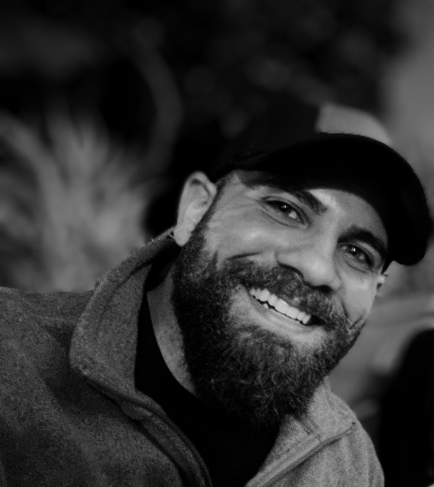

Anthony is a recently graduated Computer Science major with a Bachelor's degree and a proud US Navy veteran. My journey into software engineering is rooted in a diverse background that encompasses military service, academic excellence, and an unwavering passion for technology. During my time in the Navy, I developed invaluable skills in teamwork, leadership, and adaptability, traits that continue to shape my approach to problem-solving in the world of software engineering. My commitment to excellence and my refusal to back down from challenges were honed in the most demanding environments, and I carry these principles with me into every project I tackle. I'm ready to apply my skills to real-world problems and drive innovation in the tech industry.
I believe in the power of collaboration, lifelong learning, and pushing the boundaries of what's possible. As I embark on this exciting new chapter in my career, I'm eager to make a meaningful impact and contribute to projects that make a difference. Let's connect, innovate, and create something extraordinary together!Home